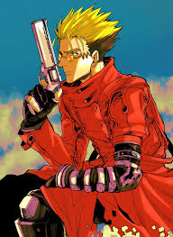
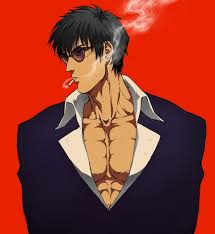
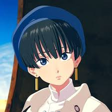
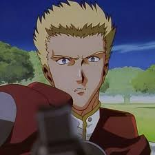

Trigun
Released: April 1, 1998
Genre: Action, Sci-Fi, Adventure, Space Western
Trigun follows Vash the Stampede, a notorious gunslinger with a massive bounty on his head. Despite his reputation for leaving destruction in his wake, Vash is actually a pacifist who avoids killing at all costs.
Set on a desert planet, Vash's journey is filled with chaotic battles, mysterious enemies, and a tragic past that slowly unravels as he faces his brother and dark truths about humanity's survival.
Cast

Vash
Voice: Masaya Onosaka / Yoshitsugu Matsuoka (Stampede)

Wolfwood
Voice: Sho Hayami / Yoshimasa Hosoya

Meryl
Voice: Hiromi Tsuru / Sakura Andou

Knives
Voice: Toshihiko Seki / Junya Ikeda
To watch Full Anime: Trigun